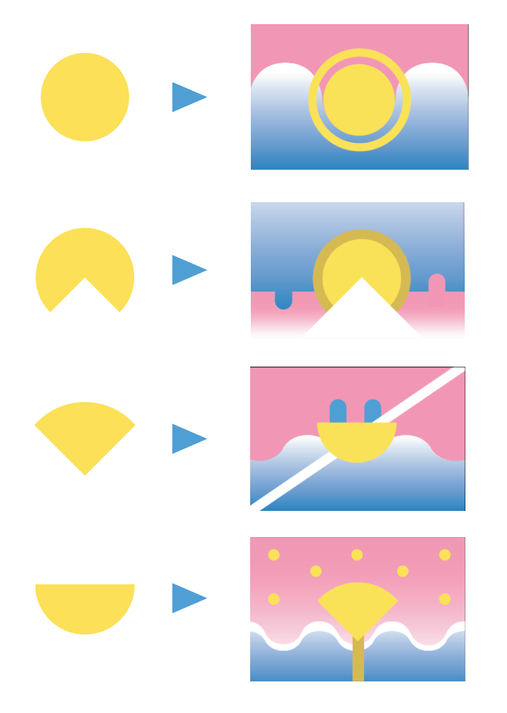

Using the previously mentioned color scheme and the motif of the incomplete sun, I made pictoral representations of imagery in Providece.
From top to bottom: the sun on the canal, the canal as a division between east and west Providence, a gondola on the canal, and a Waterfire brazier.